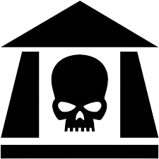
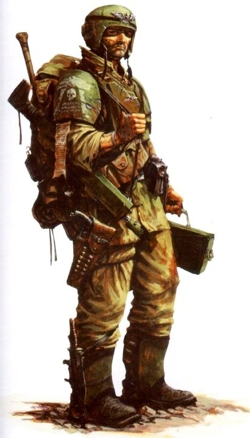

Cadian Shock Troops
| Cadian Shock Troops | |
|---|---|
 Device of the Cadian regiments Artwork © Games Workshop | |
| Founded | Early M32 (estimated); regiments raised continuously since |
| Branch | Astra Militarum |
| Type | Line infantry, armour and Kasrkin storm troops |
| Homeworld | Cadia, Segmentum Obscurus (destroyed 999.M41) |
| Raised by | Departmento Munitorum |
| Motto | "Cadia stands" |
| Colours | Green fatigues, khaki or green armour, unit-specific markings |
| Notable commanders | Ursarkar E. Creed; Jarran Kell; Knight Commander Pask |
| Notable campaigns | |
| The Black Crusades (781.M31–999.M41); Gothic War (139–151.M41); Damocles Gulf Crusade (742.M41); Kieldar Rebellion (956.M41); Third War for Armageddon (998.M41); Fall of Cadia (999.M41); Indomitus Crusade (999.M41–) | |
The Cadian Shock Troops are the regiments of the Astra Militarum raised on, and since its destruction from the people of, the fortress world Cadia, which guarded the Cadian Gate out of the Eye of Terror. They are the most numerous and the most widely respected soldiers of the Imperium of Mankind. Their doctrine, equipment and drill set the standard for the Imperial Guard as a whole, and the Departmento Munitorum uses Cadian regiments as the model by which others are measured.[1][2]
Cadians were trained for war from childhood and served in the defence of their own world against every Black Crusade from the 31st to the 41st millennium, while thousands of their regiments fought across the galaxy. When Cadia was destroyed in 999.M41, at the end of the Thirteenth Black Crusade, the regiments serving elsewhere survived it. In the Era Indomitus the Cadian name lives on in regiments raised from refugees, their descendants and soldiers of other worlds trained in Cadian ways.[3][4]
History
[edit]Origins
[edit]Cadia was settled and fortified after the Horus Heresy and the Great Scouring to block the Cadian Gate, and its garrison was first tested in the First Black Crusade of 781.M31. The Departmento Munitorum began raising regiments from its population for service off-world once the planet's own defence was secure, probably early in the 32nd millennium.[2][a] Over the following ten thousand years Cadia raised more regiments than any other world.[1]
The 41st millennium
[edit]
Records of the late 41st millennium show Cadian regiments in almost every war zone of the Imperium. In 777.M41 they met a Black Legion incursion at the Cadian Gate; in 795.M41 the Cadian 23rd put down an uprising in the Krandor System. The armoured regiments were especially celebrated: in 863.M41 the Cadian 423rd, led by the tank ace Knight Commander Pask, engaged traitor Titans at the Saint Cyllia Massacre, and in 883.M41 the same regiment led the largest armoured assault since the Battle of Tallarn on the Planus Steppes.[2]
In 937.M41 the 9th Cadian destroyed Hive Fleet Scarabus at the walls of Fortress Carcasson without losing a single company. In 956.M41 Cadians were among the many regiments that crushed the Kieldar Rebellion. Between 975 and 997.M41 the young officer Ursarkar E. Creed made his name in the Drussite Crusade, the Hrud Migration of 983.M41 and the Youth's End campaign, and in 980.M41 the 8th Cadian, under Colour Sergeant Jarran Kell, destroyed the Chaos lord Brule on Treconondal.[2]
Cadian regiments also fought the Orks at Armageddon (998.M41), the T'au at Taros (998.M41), where the 114th Cadian Armoured served with the 4621st Imperial Army, and the forces of Chaos on Medusa V in 999.M41.[2]
The Fall of Cadia
[edit]In 999.M41 Abaddon the Despoiler launched the Thirteenth Black Crusade. Hundreds of Cadian regiments, with the Kasrkin and the Youth Army, held the kasrs of Cadia under Creed, who had been raised to Lord Castellan. They were joined by the Adeptus Astartes, the Adepta Sororitas, the Adeptus Mechanicus and the living saint Celestine. Cadia did not surrender; it was destroyed when Abaddon brought down a Blackstone Fortress upon it. About three million Cadians were evacuated.[3]
Era Indomitus
[edit]The destruction of Cadia ended its recruiting, but not the regiments. Cadian units serving elsewhere when the planet died went on fighting under the old name, and the survivors joined the Indomitus Crusade from 999.M41. New Cadian regiments are raised from refugee families on the worlds where they were settled, and even on troop transports between war zones, from soldiers of other worlds who can stand the Cadian training.[4][5] The Cadians' grounding in the dangers of psychic taint and mutation, once a necessity so close to the Eye of Terror, has proved valuable on the many worlds now under the shadow of the Great Rift. Not every regiment has stayed loyal: the Cadian 917th was corrupted by a Genestealer Cult on the forge world Bheta-Decima in the early 42nd millennium.[4]
Timeline
[edit]| Date | Event |
|---|---|
| 781.M31 | First Black Crusade; first defence of the Cadian Gate |
| Early M32 (estimated) | First Cadian regiments raised for service off-world |
| 361.M37 | Cadian 15th and 23rd hold the Mihok System against the Alpha Legion |
| 863.M41 | Saint Cyllia Massacre; the 423rd under Pask |
| 937.M41 | 9th Cadian destroys Hive Fleet Scarabus |
| 980.M41 | 8th Cadian destroys Brule on Treconondal |
| 999.M41 | Thirteenth Black Crusade; Fall of Cadia |
| 999.M41– | Cadian regiments in the Indomitus Crusade |
Organisation and training
[edit]On Cadia every child was taught to strip and assemble a lasgun, and children were drafted into the Youth Army. Its soldiers, called Whiteshields from the white stripe on their helmets, fought in the field before being admitted to a full regiment. The most capable soldiers were selected for the Kasrkin, Cadia's elite storm troops.[1]
Cadian regiments follow the standard structure of the Astra Militarum and include infantry, armoured and artillery formations. Their doctrine stresses discipline, combined arms and the holding of ground: no position is given up without orders. Cadian officers are valued throughout the Guard, and many Cadians have been seconded to the staff of other regiments.[1][2]
Equipment and appearance
[edit]The Cadian soldier wears green fatigues, flak armour and the Cadian-pattern helmet, and carries a Kantrael-pattern lasgun. Armour is painted according to the war zone. Many Cadians bear the violet eyes common on their homeworld. Kasrkin are equipped with carapace armour and hot-shot lasguns.[1]
See also
[edit]Notes
[edit]- ^ No founding record survives in open archives. The date is estimated from the growth of Cadia's population after its fortification, and from the earliest Cadian regimental honours in the Munitorum rolls.
References
[edit]- ^ a b c d e Codex: Astra Militarum (9th Edition), pp. 12, 19. Games Workshop. Hill, Justin D.. Cadia Stands (novel). Black Library, Part 4, Chs. 2-8.
- ^ a b c d e f Clark, Andy. Crusade (novella). Black Library, Chs. 1, 2, 4, 7, 8, Epilogue. Codex: Astra Militarum (8th Edition), pp. 18-19, 29. Games Workshop.
- ^ a b Dembski-Bowden, Aaron. Cadian Blood (novel). Black Library. Goto, C.S.. Dawn of War: Tempest (novel). Black Library.
- ^ a b c Lyons, Steve. Gunheads (novel). Black Library. Green, Jonathan. Iron Hands (novel). Black Library.
- ^ Kyme, Nick. Rebirth (novel). Black Library. Codex: Imperial Guard (5th Edition), pp. 14, 22-25, 27, 38. Games Workshop.